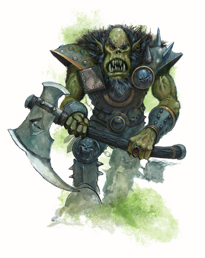

|
进阶职业：格乌什之眼

大多数人认为当一个兽人野蛮人狂暴着冲过小山顶时他们已经见到了最糟糕的兽人品种--至少在他们看到独眼兽人野蛮人狂暴着冲过小山顶以前。这个生物很有可能是一名格乌什之眼，一个十分献身于他的邪神的兽人以至于他以格乌什之名毁坏自己的容貌。
在时间开始以前的一场史诗般的战斗中，精灵之神柯瑞隆·拉瑞斯安戳掉了格乌什的左眼。充满了狂怒和憎恶，兽人之神呼唤足够忠诚的追随者以他的形象来为之服务。那些注意到这个呼唤的被知为格乌什之眼。他们献祭了他们的右眼代替了他们的左眼来使他们受损的视觉与他们神的所平衡。因此，至少是象征性的，他们能够看到他所不能看到的。这些活着的格乌什烈士是一些世上最强硬的兽人和半兽人。
格乌什之眼在感觉上是个真正的威望职业因为所有的兽人都尊敬那些达成了它的人。如果一个候选人用那残忍的兽人双头斧证明了他的能力并且在他效劳的方式中没有任何的道德，那么就只剩下一个测试了--在一个特殊的庆典上摘除他自己的右眼。这是一个血腥而又痛苦的仪式，而它的细节最好还是不要描写了。如果那候选人在过程中发出了声音，他就失掉了这个测试。没有任何结果在失败后发生，除了他再也不可能成为一名格乌什之眼--并且他失掉了一只眼睛。
野蛮人从这个威望职业中获得最大的价值，因为它鼓励狂暴作为一种战斗方式。战士、牧师、巡林客甚至是游荡者也响应这个呼唤。兽人和半兽人是这个职业明显的候选人，而一些兽人部落谣传其他种族的野蛮人继承了这衣钵。当然，这些可能仅仅是用来激发年轻兽人嫉妒的狂暴的传奇。
生命骰数：ｄ１２。
职业需求
要具备格乌什之眼的资格，人物必须符合以下全部条件。
种族：兽人或半兽人。
阵营：混乱邪恶、混乱中立、或中立邪恶。
基础攻击加值：＋６
专长：擅长异种武器（兽人双头斧），专攻武器（兽人双头斧）。
特殊要求：角色必须是一名格乌什的信仰者并且必须在一个特殊的仪式中摘除自己的右眼。如果他重新获得双眼视力的话，任何的格乌什之眼特殊能力都不会再起作用。
本职技能
格乌什之眼的本职技能如下（括号中为该技能的关键属性）：“攀爬”（力量），“威吓”（魅力），“跳跃”（力量）“骑术”（敏捷），“野外求生”（感知）和“游泳”（力量）。
升级可得到的技能点数：２＋智力调整值。
表２－１０：格乌什之眼
等级 ＢＡＢ 强韧 反射 意志 特殊
１ ＋１ ＋２ ＋０ ＋０ 盲斗，盲从，狂暴
２ ＋２ ＋３ ＋０ ＋０ 盲眼旋风
３ ＋３ ＋３ ＋１ ＋１ 仪式伤疤＋１
４ ＋４ ＋４ ＋１ ＋１ 致盲唾液 ２次／日
５ ＋５ ＋４ ＋１ ＋１ 盲感 ５英尺
６ ＋６ ＋５ ＋２ ＋２ 仪式伤疤＋２
７ ＋７ ＋５ ＋２ ＋２ 致盲唾液 ４次／日
８ ＋８ ＋６ ＋２ ＋２ 盲感 １０英尺
９ ＋９ ＋６ ＋３ ＋３ 仪式伤疤＋３
１０ ＋１０ ＋７ ＋３ ＋３ 格乌什之视野
职业特性
下述均为格乌什之眼进阶职业的职业特性：
擅长武器和防具：格乌什之眼不擅长任何武器与防具。
盲斗（Ｂｌｉｎｄ－Ｆｉｇｈｔ）：格乌什之眼可以获得盲斗专长作为额外专长。此外，他不会因单眼而受到任何不利影响。
盲从（Ｃｏｍｍａｎｄ ｔｈｅ Ｈｏｒｄｅ）（特异能力）：格乌什之眼可以引导３０英尺内任何非善良且生命骰低于其人物等级的兽人或半兽人。那些服从其命令的生物意志豁免将获得＋２的士气加值。任何的想要反对格乌什之眼的兽人或半兽人受益者将立刻失去此奖励。
狂暴（Ｒａｇｅ）（特异能力）：格乌什之眼能够进入野蛮人一般的热血沸腾的狂暴的状态，并获得所有相同的奖励与缺点（请见《玩家手册》２５页）。当计算每日使用狂暴能力和次数时，可以累加其格乌什之眼职业等级和野蛮人等级（如果有）。即当计算《玩家手册》２５页中的表３－３：野蛮人的数据以及每日狂暴次数时，都可以将其格乌什之眼职业等级和野蛮人等级加在一起。例如：一个６级野蛮人／２级格乌什之眼每日能够狂暴３次；而一个没有野蛮人等级的４级格乌什之眼每日能够狂暴２次（同４级野蛮人）。
盲眼旋风（Ｓｗｉｎｇ Ｂｌｉｎｄｌｙ）（特异能力）：到了２级，格乌什之眼的力量更增，但付出了防御降低的代价。人物在狂暴状态时会获得＋４的额外力量值，但其防御等级惩罚将从－２增至－４。
仪式伤疤（Ｒｉｔｕａｌ Ｓｃａｒｉｎｇ）（特异能力）：到了３级，通过快速毁坏自己的皮肤，格乌什之眼的天生防御加值将获得＋１奖励（若无天生防御加值，则获得＋１天生防御加值）。此后每获得三个格乌什之眼等级，这个奖励将再增加＋１。
致盲唾液（Ｂｌｉｎｄｉｎｇ Ｓｐｉｔｔｌｅ）（特异能力）：到了４级，格乌什之眼可以对２０英尺内的任何对手射出致盲唾液。通过一个远程接触攻击（有－４处罚），他将他的胃酸吐进目标的眼睛。对手需通过一次反射豁免检定（ＤＣ为１０＋格乌什之眼职业等级＋格乌什之眼的体质调整值），失败则陷入目盲状态直到他或她清洗掉这种唾液。这个攻击不影响没有眼睛的或不依靠视觉的生物。致盲唾液在４级时可以每天使用一次而在７级时每天可使用两次。
盲感（Ｂｌｉｎｄｓｉｇｈｔ）（特异能力）：到了５级，格乌什之眼在周身５英尺内获得盲感能力（请见《怪物手册》３０６页）。其范围在８级时增加到１０英尺。
格乌什之视野（Ｓｉｇｈｔ ｏｆ Ｇｒｕｕｍｓｈ）：到了１０级，格乌什之眼能够通过他失去的眼睛看到他自己死亡的瞬间。此后，这个预见给予他所有的豁免检定以及防御等级＋２的士气奖励。同时，当生命值减至负数时他也不会陷入昏迷状态；但无论如何，当人物的生命值达到－１０时仍会死亡。（不论这先兆准确与否都无所谓——人物会相信它是真的。）
格乌什之眼样本：
巴拉－凯特
Ｂａｒａ－Ｋａｔａｌ
半兽人
６ 野蛮人／４ 格乌什之眼
挑战级别：１０
中型人形生物
ＨＤ：（６ｄ１２＋１２）＋（４ｄ１２＋８）
ＨＰ：８５
先攻调整：＋２
速度：３０英尺
ＡＣ：２０ 接触１２，措手不及２０
基础攻击值：＋１０
擒抱：＋１４
攻击：＋１６近战（１ｄ８＋７／１９－２０／ｘ３，＋１锐锋兽人双头斧）或＋１３远程（１ｄ８＋５／ｘ３，＋１复合长弓［＋４力量加值］）
全力攻击：＋１６／＋１１近战（１ｄ８＋７／１９－２０／ｘ３，＋１锐锋兽人双头斧）或＋１４／＋９近战（１ｄ８＋５／１９－２０／ｘ３，＋１锐锋兽人双头斧）和＋１４近战（１ｄ８＋３／ｘ３，＋１兽人双头斧）或＋１３／＋８远程（１ｄ８＋５／ｘ３，＋１复合长弓［＋４力量加值］）
ＳＡ：致盲唾液 ２次／日。
ＳＱ：盲从；黑暗视觉６０英尺；精通直觉闪避；狂暴 ３次／日；仪式伤疤；盲眼旋风；陷阱感知＋２；直觉闪避。
阵营：混乱邪恶。
豁免：强韧＋１１，反射＋５，意志＋４
属性：力量：１８，敏捷：１５，体质：１４，智力：８，感知：１２，魅力：６。
技能和专长：威吓＋７，跳跃＋１８，游泳＋７；盲斗，擅长异种武器（兽人双头斧），猛力攻击，双武器攻击，专攻武器（兽人双头斧）。
致盲唾液（Ｅｘ）：射程为２０英尺的远程接触攻击（＋７加值）。目标需通过一次反射豁免检定（射程内ＤＣ为１８，射程外ＤＣ为１６。），失败则陷入目盲状态直到他或她清洗掉这种唾液。
盲从（Ｅｘ）：巴拉－凯特可以引导３０英尺内任何非善良且生命骰低于１０的兽人或半兽人，只要他们服从巴拉－凯特的领导。
精通直觉闪避（Ｅｘ）：巴拉－凯特不会遭受１０级以下的游荡者夹击。
狂暴（Ｅｘ）：力量＋８，体质＋４，意志豁免＋２，ＡＣ－４，持续７轮。盲眼旋风职业特性（见上文）提高了ＡＣ惩罚但给予力量＋４的加值总计＋８。
仪式伤疤（Ｅｘ）：巴拉－凯特的天生防御加值将获得＋１奖励。
盲眼旋风（Ｅｘ）：巴拉－凯特在狂暴状态时会获得＋４的额外力量值，但其防御等级惩罚将从－２增至－４。
陷阱感知（Ｅｘ）：巴拉－凯特对陷阱的反射检定有＋２值，对陷阱攻击的防御等级有＋２闪避加值。
直觉闪避（Ｅｘ）：巴拉－凯特可以在尚未意识到危险前，就做出相关的反应。此后，他即使陷入迟滞或遭陷形敌人攻击，也不会丧失ＡＣ的敏捷加值。
物品：＋１锐锋／＋１兽人双头斧；＋２胸甲；＋１复合长弓（＋４力量加值）；２０枝箭。
幕后随谈：
组织：格乌什之眼
“吾父子民之轮回唯一：杀戮，杀戮，以及杀戮。逆其道者必死无疑。”——库尔斯克
虽然服务于格乌什之眼的兽人都是为了他们那个唯一的再透明不过的愿景，但通常来说格乌什之眼都不具备特殊高的资格来为整个部落作打算——即使他们在其战斗生涯的早期也曾担当过某个部落的领袖。也就是说，他们要依赖于格乌什牧师智慧的引导。为了防止任何不良无序的因素在其指派的追随者之间滋长蔓延，格乌什之眼和牧师们经常共同鼓动同其他每个对立种族间的战争。
自从格乌什之眼开始向柯瑞隆·拉瑞斯安对其神祗的侮辱行为寻求报复开始，许许多多的格乌什之眼开始沉迷于对精灵的破坏，只要在他们视野的精灵团体都会遭其猛烈的攻击。受到他们领袖狂暴霸气的提振，兽人们往往会视死如归地投入同精灵部族的战争中去。
多名格乌什之眼之间往往不能和睦相处，因为他们对用何种手段能够最好地服务于他们的神祗通常会有火药味很浓的分歧。然而，每隔几十年，一些格乌什之眼便会在头脑中达成共识——发动战争！（毕竟，一场由几十名格乌什之眼领导着数以百计的部落发动的讨伐战争是教育年轻一代对神祗的忠诚的最佳方式了。）讨伐前，各部落的格乌什之眼们会立刻闭上其剩下的那只可用的眼睛宣告休战——这意味着他们会对部落间的争端视而不见。然后，他们便会出征，进行对其他生物灭族的讨伐之战。 |